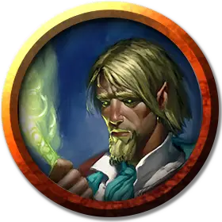

Колдун Архифеи
Warlock of the Archfey
Средний Гуманоид, любое мировоззрение

Класс Доспеха 13 (16 с доспехами мага)
Хиты 67 (15к8)
Скорость 30 футов
| мод | спас | ||
|---|---|---|---|
| СИЛ | 9 | −1 | −1 |
| ЛОВ | 16 | +3 | +3 |
| ТЕЛ | 11 | +0 | +0 |
| мод | спас | ||
|---|---|---|---|
| ИНТ | 11 | +0 | +0 |
| МДР | 12 | +1 | +3 |
| ХАР | 18 | +4 | +6 |
Навыки Магия +2, Обман +6, Природа +2, Убеждение +6
Иммунитет к состояниям очарование
Чувства пассивное Восприятие 11
Языки любые два языка (обычно Сильван)
Опасность 4 (1100 опыта)
Бонус мастерства +2
Среда обитания Арктика, Болото, Город, Горы, Лес
Действия
Мультиатака. Колдун совершает две атаки Рапирой или использует Запутывающее слово дважды.
Рапира. Рукопашная атака оружием: +5 к попаданию, досягаемость 5 футов, одна цель. Попадание: 7 (1к8 + 3) колющего урона плюс 7 (2к6) урона силовым полем.
Запутывающее слово. Колдун изрекает магическое замешательство, нацеливаясь на одно видимое существо, находящееся в пределах 60 футов. Цель должна преуспеть в спасброске Мудрости Сл 14, иначе получит 9 (2к8) урона психической энергией и помеху на броски атаки до конца следующего хода колдуна.
Использование заклинаний. Колдун накладывает одно из следующих заклинаний, используя Харизму в качестве базовой характеристики (Сл спасброска от заклинаний 14):
• Неограниченно: пляшущие огоньки [dancing lights], маскировка [disguise self], доспехи мага [mage armor] (только на себя), волшебная рука [mage hand], малая иллюзия [minor illusion], фокусы [prestidigitation], разговор с животными [speak with animals];
• 1/день каждое: очарование личности [charm person], переносящая дверь [dimension door], удержание чудовища [hold monster].
Реакции
Туманное исчезновение (Перезаряжается после короткого или продолжительного отдыха). В ответ на получение урона, колдун становится невидимым и телепортируется на расстояние до 60 футов в видимое ему свободное пространство. Он остается невидимым до начала его следующего хода или пока он не атакует, совершит бросок урона или наложит заклинание.
Описание
Колдуны архифей получают свои силы от магического договора, заключенного с владыками Страны Фей. Эти колдуны обычно сотрудничают с меньшими фейскими существами, такими как богглы [Boggle], квиклинги [Quickling], красные колпаки [Redcap], сатиры [satyr] и спрайты [sprite].
Колдуны
Колдуны обретают тайную мощь благодаря магическим договорам с таинственными сущностями. В то время как некоторые используют свои способности, чтобы служить источникам своей силы, другие используют их, чтобы подорвать или даже уничтожить эти сущности.